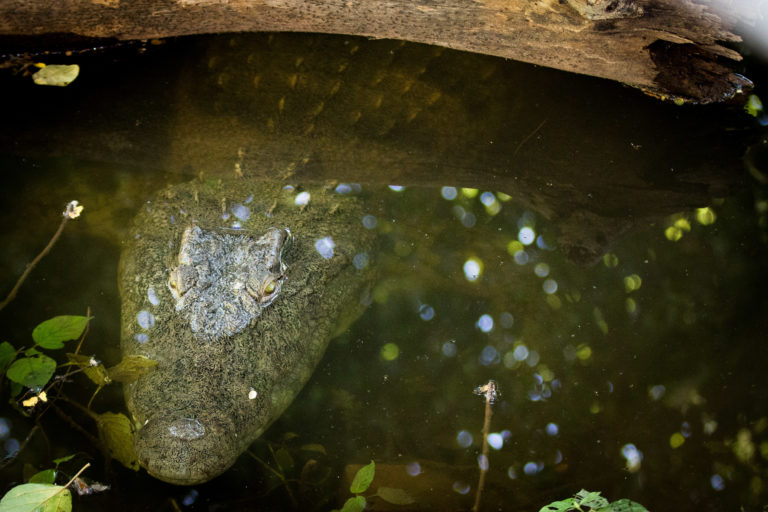

Rafting the Zambezi River
Experience the thrill of rafting on the Zambezi River, one of the most exhilarating white-water rafting destinations in the world. Join us for an unforgettable adventure!
10 Things you should know before rafting the Zambezi River
Trip Description
Considered the best one day rafting experience in the world, the Zambezi River flowing down the Batoka Gorge provides one of the most intense sensory thrills imaginable. Its white-water rapids and striking scenery, deep within the sheer black cliffs of the Batoka Gorge afford the adrenaline junkie a wild roller-coaster ride along a route carved over millennia by the middle Zambezi River.
Splash White Water Rafting offer a Full Day Rafting experience and the season is split into Low or High Water. Choose a full-day or opt for an overnight / multi-day experience – the ultimate camping experience!
Book Your Trip Now1) Water levels vary seasonally - Dates for your trip are important.
Thankfully, the Zambezi is a free-flowing river, and the water level is not affected by any dams. However, it is heavily affected by seasonal natural flow variations. Our rafting trips adapt to the changing water levels by “putting on” at different entry points. Generally, from Late July to Mid-January, our trips put in at the “Boiling Pot” directly below Victoria Falls. At this time, the Zambezi River is at a relatively low flow, where more of the bedrock is exposed, creating the huge crashing rapids the Zambezi is renowned for.
From Mid-January to July, Safpar operates on a “high-water” run, which is generally from rapid number 7B, rapid number 10, or rapid number 14. At this time, the bedrock in the riverbed is covered, and these trips are characterized by big eddy fences and boils. Highlights of a high-water run include some colossal features on the riverbanks, such as rapid 16B, a massive set of breaking waves.

The river is always changing, so no two trips are ever the same. If you fancy big demanding water and high adrenaline, then book your trip as the low-water season opens or closes—Late July/August and Late December/January.
Interesting Facts
- The Zambezi River is the fourth longest river in Africa, stretching over 2,574 kilometers.
- It flows through six countries: Zambia, Angola, Namibia, Botswana, Zimbabwe, and Mozambique.
- The river is home to diverse wildlife, including hippos, crocodiles, and various fish species.
- The Zambezi River is famous for its stunning waterfalls, including the iconic Victoria Falls.
- It is a popular destination for adventure activities such as white-water rafting and bungee jumping.
2) You should gift your friend a Nyami-Nyami necklace.
The Nyami-nyami necklace carving is a symbolic representation of the god of the Zambezi. Legend has it that wearing the necklace will grant you safe passage through the gorge. However, in order to work the necklace must be a gift. These necklaces are available in bone, wood, stone and lately in aluminum. They are excellent keepsakes, and if you see one being worn anywhere in the world; it is an indication that the person has rafted the Zambezi River.
The origins of the legend are contentious. The most well-known story is that “Nyami-nyami” is trapped by the Kariba dam wall, and his wife is downstream, below the wall. While the Kariba dam was being built, the “Ba-Tonga” people foretold of Nyami-nyami’s anger at man’s folly in damming the mighty Zambezi River. The subsequent floods that destroyed the first stages of the wall were seen as an expression of his anger.
In our area, it is believed that in times of great hardship and drought “Nyami-nyami” will show himself to the people, allowing them to take portions of his body to alleviate hunger. This legend perhaps has some basis in our local African grey mottled eel, which resembles the Nyami-nyami’s carving. When the Zambezi has an extremely low year, normally due to drought, some pools get cut off from the main river and these eels are easily hunted by a fishing spear. However, it has been some time since this has happened.
3) The Zambezi offers superb Multi-day options
If you plan on journeying to the Zambezi River to experience the Victoria Falls (known locally as Mosi-oa-Tunya “The smoke that thunders”) and take part in the world’s greatest rafting trip. You should consider the various multi-day options available. Overnight and four-day trips let you cover more of this amazing river.
There is a strong “expedition” type feel to the trips. Untouched camping spots, on remote pristine white beaches, make this a must. Explore under the Victoria Falls, soak in the serenity and raft some incredible rapids downstream from the commercial day section. The astrology is amazing as the light pollution is non-existent, easy to see how the gorge got it’s “a thousand stars” rating.
4) Your raft may Flip or you may go for a “swim”
The Zambezi is affectionately known as the “Slambezi”, as big water flips are more the norm than the exception. This is mitigated by the river conditions.
The Zambezi is a “warm-pool drop” river. What “warm” means is that we don’t have to deal with the huge issues associated with cold water immersion. If you go for a dip or have a flip we pull you back on, or one of our kayakers will rescue you and the trip continues, absolutely no big deal.
“Pool Drop” means that the rapids generally empty out into relatively calm pools. So if the raft does go over, we have time to collect everybody, get you all back on your raft and take a break before the next rapid. On other rivers of a similar class, a flip is a calamity, as the rapids often feed into each other.
5) The river is in a steep-sided gorge
The “Middle Batoka Gorge” on which we raft, is formed from the action of the river eroding through fault lines in the basalt rock. The result; a very steep sided gorge with limited access points. You will be required to hike in and out of the gorge to enjoy the rafting. By hike, we mean you will have to ascend steep paths for up to 30 minutes, to reach roads and infrastructure.
Be sure to bring footwear that allows you to hike up and down. We have made these paths easier to egress with “Mopani” (a local tough tree) wood ladders. It is tiring, and in the heat, the climb can be daunting, take your time, no rush in Africa. We make sure there is plenty of water and our guides are on hand to assist you.
Keep in mind that if you are considering rafting this class V river, you should be mentally and physically prepared for this challenge. The hike in and out is a great indicator of the fitness levels required for this river. The average person has no problem on these paths.
Be sure to bring strong walking shoes or trainers for the hike in and out. You don’t need to wear them in the raft; we can give them to our logistics team, who will carry them down to you before the hike out.
Going down into the “Batoka Gorge” is often underestimated, especially at Rapid #14. Take your time and be sure of your footing.
If you are finding the descent or ascent challenging, please let other guests pass you when safe to do so. Our guide team will soon be on hand to assist you.
6) There are crocodiles…but they are not a problem
The Nile Crocodile is endemic to the Zambezi River and there exists a resident and moving population in the area we raft. However, in all the years we have been rafting we have not had any issues. Renowned ichthyologist and biologist Dr. John Minshull postulates, that the conditions in the upper reaches of the “middle Batoka gorge” hinder large reptile growth (they don’t get to a size that considers us prey very often).
One theory is that small crocodile hatchlings do go over the Victoria Falls and survive the drop. They survive by eating small crustaceans and insects. However, as their nutrition needs increase, along with their body mass. Their ability to move and find enough food in the small eddies, in the fast flowing water begins to dissipate. They then move further downstream, to quieter areas; out of the swift rapid areas.
Some large crocodiles do walk into the gorge from the upper river, and others do inhabit larger quieter pools, and evidence (small hatchlings in areas) suggest they do breed. Once again the theory goes that they struggle to function efficiently in fast-moving water. Or appear in great numbers due to the absence of food. So in some areas that remain relatively calm, we have small populations; generally, we know where these spots are and we take care and acknowledge the risk. When we do see them, they tend to be retiring and shy, a sighting is an exciting part of the day.
Interesting Fact
Crocodiles, Hippos, and Elephants regularly go over the Victoria Falls at certain water levels. We often find the carcasses in the Batoka Gorge, and there are some well-known “bone gardens” in certain locations.
7) We keep crews in travel bubbles and insist on following Covid-19 mitigation protocols.
We run the Zambezi in 16-foot self-bailing rafts. Due to the ongoing Covid-19 pandemic we have reduced our crews to four people (six if a travel cohort). We endeavour to keep travelling groups/bubbles together and load rafts accordingly. Socially distance as much as possible and have reduced our vehicle loading.
Our guides are regularly tested and we await the arrival of the second vaccine shots in Zambia.
Please be sure to bring your face covering. We can’t wear masks on the river, but on the vehicles and during the outdoor socially distanced briefings these are a must.
Rafting does obviously occur outdoors. We do our best to ensure that contact with others is reduced. However, given the nature of this extreme sport. Some contact with others is inevitable and we ask that guests consider this risk when contemplating a river trip.
You will be under the instruction of one of our “International Rafting Federation” accredited guides. The teamwork and exhilaration of a day on the Zambezi simply can’t be explained; until you “tick it off”. Sharing a (socially distanced) “Mosi” beer with your fellow rafters at our rafting base, on the banks of the upper-Zambezi River, is a great way to finish the day. We call it “Beer and medal time”.
Interesting Fact
We run “Stern mounts”, rafts with oars. This is usually at the guides discretion. However, on every trip, you will see at least one “stern mount”. The seat that the guide sits on, is actually a stretcher should we require it.
8) The Zambezi is class V
The Zambezi is a Class-V river and it is important to give the River the respect it deserves. We have a strict 15-year old age limit in place. This is more to do with emotional stability in receiving instructions in stressful situations; not to do with body size. Please be advised guests under 18 years old will require the consent and signature of a guardian.
While we manage risk to the strict policies of the “International Rafting Federation” and with 30 years of experience. Guests should be aware of what they have signed up for. However, the Zambezi also has something for everyone and at times of the year when the top section is full class V, guests can opt to put in lower down on the river for a class III-IV run. We would advise you consult us regarding your expectations and the time of year of your visit.
Worldwide trends have seen an increase in the overuse of Class-V classification on runs that are clearly below the grade. Class-V is defined by the British Canoe Union as:
“Extremely difficult – long and very violent rapids with severe hazards. Continuous, powerful, confused water makes roué-finding difficult. Precise maneuvering is critical.”
The Zambezi is a Class-V river and it is important to give the River the respect it deserves. We have a strict 15-year old age limit in place. This is more to do with emotional stability in receiving instructions in stressful situations; not to do with body size. Please be advised guests under 18 years old will require the consent and signature of a guardian. While we manage risk to the strict policies of the “International Rafting Federation” and with 30 years of experience. Guests should be aware of what they have signed up for. However, the Zambezi also has something for everyone and at times of the year when the top section is full class V, guests can opt to put in lower down on the river for a class III-IV run. We would advise you consult us regarding your expectations and the time of year of your visit.
9) There is a rafting festival.
October 24th to October 27th, 2019 is the “Zambezi White Water Festival”, groups of paddlers from around the world compete for the grand title, over two days of fun in the sun, celebrating this incredible river. This event is the only Class-V amateur rafting event in the world. Great prizes, huge fun, good food, and live music.
The event takes place over three days. Day one is registration day and a cruise on the upper Zambezi, day two is the practice day. Teams go paddling with their guides and plan their attack. Day three is race day. The race takes place from Rapid #1 – #25 and the format includes a ‘Test of the Best’, Zambezi Le Mans sprint and a slalom race, with a fun ‘Surf & Turf’ competition for the best surf on the iconic Rapid 18, Oblivion. On Saturday evening watch the day’s events have the prize-giving ceremony all followed by THE MOTHER OF ALL PARTIES!
10) There is a dam development in progress
Originally proposed in the 1970’s the Batoka “Hydro-electric Scheme”, has been provisionally greenlit by the Zambian and Zimbabwean governments (The Zambezi forms the border between the two countries). While still awaiting ESIA completion; the Dam is mooted to be completed by 2025 according to the literature available. At the current dam wall specifications, the river will be flooded and rafting on the Zambezi River will no longer be possible. At the time of publishing the dam is still scheduled to go ahead.
Your Involvement and booking with us contribute hugely to the economy.
Tourism is Zambia’s third biggest economic contributor. The rafting industry is a cornerstone activity in the tourism line-up in Livingstone. The industry employs a large number of people in the area, both directly and indirectly. The tax re-numeration and benefit infrastructure, are vital to the people living here. A high proportion of our guides have been working for us for over 15 years. Safpar is constantly training new staff in all aspects of the business. Choosing to use us as a local operator ensures your payment goes back into the development of the region.
Safari-Par-Excellence has been operating here for the past 25 years and we are active in many developments and corporate responsibility spheres. We encourage you to “pack for a purpose” and invite you to visit the schools and projects we support. We operate on a “needs” basis so our projects are continually changing.0
What you need to bring.
- Good walking footwear for the trails to enter and exit the “Batoka Gorge”.
- From mid-September the basalt rocks at rapid#9 around which we walk become too hot for bare feet. We recommend you bring shoes you don’t mind getting wet and we will tie them onto the back of the raft.
- Quick drying clothing that you don’t mind getting wet. (A long sleeve light cotton shirt or rash vest to keep out of the sun is a good idea).
- Suncream-this is a must year round, be sure to re-apply liberally especially to the top of your thighs.
- “Chums”-or string to hold on your glasses if you need to wear them on the river. Same applies to Sunglasses.
- We use Life Straw water bottles with success here. While we do provide drinking water, feel free to bring yours as long as you have a means of securing it to the raft.
- Any medication you may need during the trip e.g asthma pumps, epi pens.
- A sense of adventure.